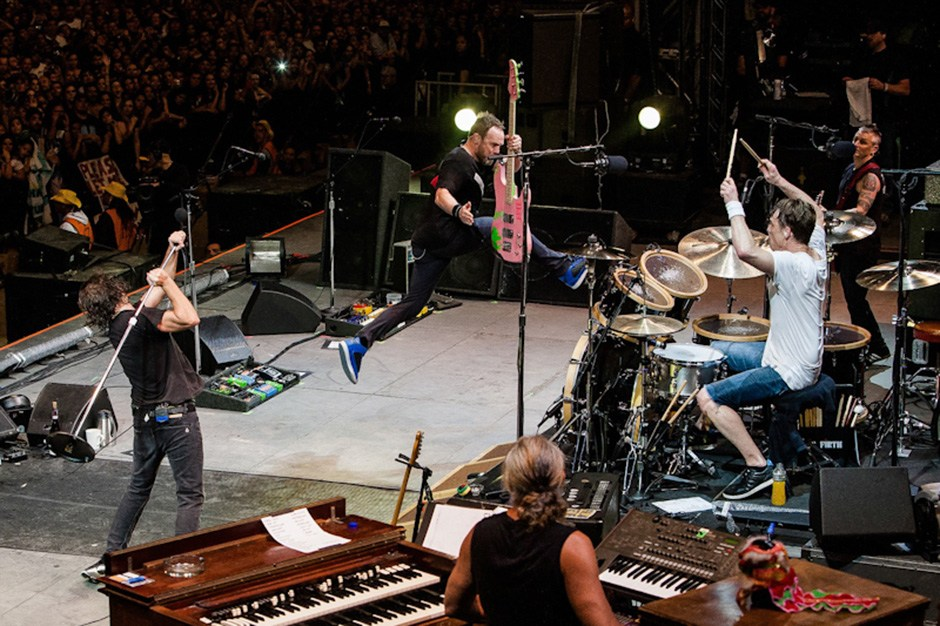
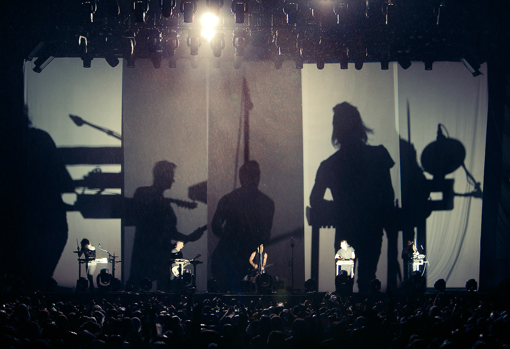
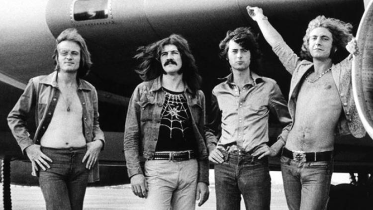
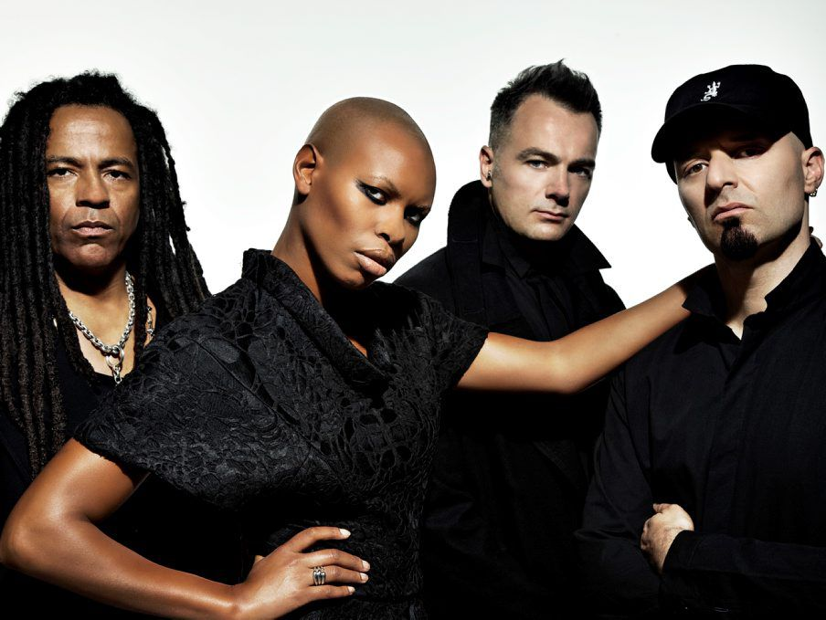

Best bands ever

Pearl Jam
October 22, 2015 officially marked 25 years of Pearl Jam performing live. Ten studio albums, hundreds of unique live performances and hundreds of official live concert bootleg releases later, the band continue to be critically acclaimed and commercially successful -- with over 85 million albums sold worldwide.

Nine inch nails
Our score for the film Bird Box is now available for purchase in high-resolution here. This same version is available on streaming services here. Like all soundtrack records we release, we aim for these to play like albums that take you on a journey and can exist as companion pieces to the films AND as their own separate works.

Led Zeppelin
Led Zeppelin foi un grupo de rock inglés fundado en 1968 polo guitarrista Jimmy Page trala disolución do seu anterior grupo, The Yardbirds. Coa colaboración do baixista John Paul Jones, ó que xa coñecía de antigos traballos, a inclusión de Robert Plant como vocalista e John Bonham como batería, quedaría conformada unha das bandas máis importantes da historia do rock, fundadores do Hard rock e mesmo do heavy metal. Tamén en toda a súa discografía se inclúen influencias de blues, reggae, soul, funk, jazz, música celta, folk e country.

Skunk Anansie
Skunk Anansie are a British rock band whose members include Skin (lead vocals, guitar), Cass (guitar, bass, backing vocals), Ace (guitar, backing vocals) and Mark Richardson (drums and percussion). Skunk Anansie formed on 12 February 1994, disbanded in 2001 and reformed in 2009. The name "Skunk Anansie" is taken from Akann folk tales of Anansi the spider-man of Ghana, with "Skunk" added to "make the name nastier". They have released six studio albums: Paranoid & Sunburnt (1995), Stoosh (1996)
My Favorite movies

|
TrainspottingRenton, deeply immersed in the Edinburgh drug scene, tries to clean up and get out, despite the allure of the drugs and influence of friends. |

|
Point BreakAn F.B.I. Agent goes undercover to catch a gang of surfers who may be bank robbers. |

|
Reservoir DogsWhen a simple jewelry heist goes horribly wrong, the surviving criminals begin to suspect that one of them is a police informant. |